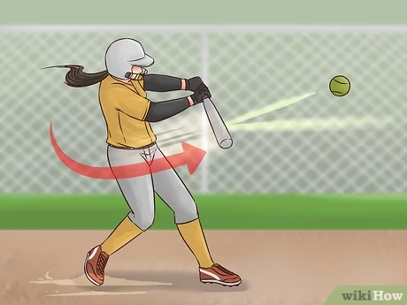

Entenda as principais regras do softbal:

- A partida consiste em sete rodadas, mas ao final de cada uma, muda-se as posições de ataque e defesa entre os times. Dessa forma, quem estava atacando, passa a defender.
- A atleta arremessadora fica ao centro do campo, enquanto a apanhadora fica atrás da home plate, uma base que se inicia a partida, junto com a batedora.
- Caso a batedora tente acertar a bola e erre, marca-se um strike, que representa uma desvantagem. No entanto, se não tentar acertar, a arbitragem pode marcar o strike ou então um ball, que significa uma vantagem para o time. Se acertar a bola, a batedora precisa correr para as bases.
- Três strikes obrigam a batedora a deixar o campo e passar a vez para outra atleta da equipe. Por outro lado, se conseguir quatro balls, completa um walk e avança até a primeira base, aumentando as chances de pontuação.
- Cada vez que a batedora consegue um acerto, as adversárias devem tentar uma eliminação, o que representa anular uma jogada.
- A anulação pode ocorrer quando a adversária agarra a bola rebatida e consegue tocá-la na batedora ou quando passa a bola resgatada para a home plate, mas antes que a batedora chegue a base.
- Se a equipe que estiver defendendo não conseguir anular a jogada, a batedora se salva ao chegar a qualquer uma das bases. Caso complete o circuito, pontua um rum.
- Cada time ataca até que três das batedoras sejam eliminadas. Ao final, vence quem tiver mais runs.